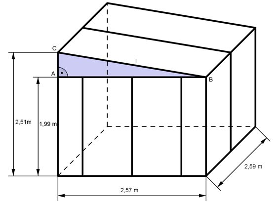

Aufgabe 146 Berechnen Sie das Volumen V des dargestellten Treibhauses. Wie groß ist die Glasfläche A ohne Berücksichtigung der Streben?  Trapezförmiges Prisma: V = G * h 1,99 m + 2,51 m G = ------------------ * 2,57 m = 5,78 m² 2 V = 5,78 m² * 2,59 m = 15 m³ A = 2 * Trapezfläche + Umfang Glasfläche * h Pythagoras im Dreieck ABC: Dachschräge l² = 2,57² m² + (2,51 m - 1,99 m)² = 6,87 m² |√ l = 2,62 m A = 2 * 5,78 m² + (2,51 m + 1,99 m + 2,62 m) * 2,59 m A = 11,56 m² + 18,44 m² = 30 m²